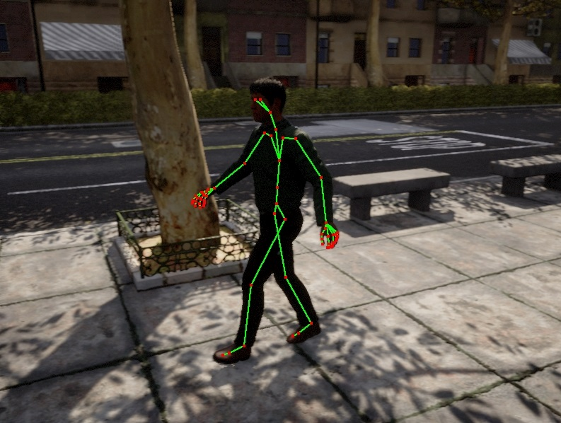

行人骨骼控制¶
在本教程中，我们介绍如何通过 Carla Python API 手动控制行人的骨骼并为其设置动画。所有可用类和方法的参考可以在 Python API 参考 中找到 。
!!! 笔记
本文档假设用户熟悉 Python API。。
用户在阅读本文档之前应阅读第一步教程：
核心概念。进行行人建模请参考链接 。
行人骨骼结构 ¶
所有行人都具有相同的骨骼层次结构和骨骼名称。下面是骨架层次结构的图像。骨骼的层次结构图参考链接 。
crl_root
└── crl_hips__C
├── crl_spine__C
│ └── crl_spine01__C
│ ├── ctrl_shoulder__L
│ │ └── crl_arm__L
│ │ └── crl_foreArm__L
│ │ └── crl_hand__L
│ │ ├── crl_handThumb__L
│ │ │ └── crl_handThumb01__L
│ │ │ └── crl_handThumb02__L
│ │ │ └── crl_handThumbEnd__L
│ │ ├── crl_handIndex__L
│ │ │ └── crl_handIndex01__L
│ │ │ └── crl_handIndex02__L
│ │ │ └── crl_handIndexEnd__L
│ │ ├── crl_handMiddle_L
│ │ │ └── crl_handMiddle01__L
│ │ │ └── crl_handMiddle02__L
│ │ │ └── crl_handMiddleEnd__L
│ │ ├── crl_handRing_L
│ │ │ └── crl_handRing01__L
│ │ │ └── crl_handRing02__L
│ │ │ └── crl_handRingEnd__L
│ │ └── crl_handPinky_L
│ │ └── crl_handPinky01__L
│ │ └── crl_handPinky02__L
│ │ └── crl_handPinkyEnd__L
│ ├── crl_neck__C
│ │ └── crl_Head__C
│ │ ├── crl_eye__L
│ │ └── crl_eye__R
│ └── crl_shoulder__R
│ └── crl_arm__R
│ └── crl_foreArm__R
│ └── crl_hand__R
│ ├── crl_handThumb__R
│ │ └── crl_handThumb01__R
│ │ └── crl_handThumb02__R
│ │ └── crl_handThumbEnd__R
│ ├── crl_handIndex__R
│ │ └── crl_handIndex01__R
│ │ └── crl_handIndex02__R
│ │ └── crl_handIndexEnd__R
│ ├── crl_handMiddle_R
│ │ └── crl_handMiddle01__R
│ │ └── crl_handMiddle02__R
│ │ └── crl_handMiddleEnd__R
│ ├── crl_handRing_R
│ │ └── crl_handRing01__R
│ │ └── crl_handRing02__R
│ │ └── crl_handRingEnd__R
│ └── crl_handPinky_R
│ └── crl_handPinky01__R
│ └── crl_handPinky02__R
│ └── crl_handPinkyEnd__R
├── crl_thigh__L
│ └── crl_leg__L
│ └── crl_foot__L
│ └── crl_toe__L
│ └── crl_toeEnd__L
└── crl_thigh__R
└── crl_leg__R
└── crl_foot__R
└── crl_toe__R
└── crl_toeEnd__R
手动控制行人骨骼 ¶
以下是如何通过 Carla Python API 更改行人骨骼变换的详细分步示例。
连接到模拟器 ¶
导入本例中使用的必要库
import carla
import random
初始化 Carla 客户端
client = carla.Client('127.0.0.1', 2000)
client.set_timeout(2.0)
生成行人 ¶
在地图的一个生成点生成一个随机行人。
world = client.get_world()
blueprint = random.choice(self.world.get_blueprint_library().filter('walker.*'))
spawn_points = world.get_map().get_spawn_points()
spawn_point = random.choice(spawn_points) if spawn_points else carla.Transform()
world.try_spawn_actor(blueprint, spawn_point)
控制行人骨骼 ¶
可以通过将 WalkerBoneControl 类的实例传递给行人的 apply_control 函数来修改行人的骨架。WalkerBoneControl 类包含要修改的骨骼的变换。它的 bone_transforms 成员是成对值元组的列表，其中第一个值是骨骼名称，第二个值是骨骼变换。可以在每个节拍信号上调用 apply_control 函数来为行人的骨骼设置动画。每个变换的位置和旋转都是相对于其父变换的。因此，当修改父骨骼的变换时，子骨骼在模型空间中的变换也会相对改变。
在下面的示例中，行人的手设置为围绕前轴旋转 90 度，并且位置设置为原点。
control = carla.WalkerBoneControl()
first_tuple = ('crl_hand__R', carla.Transform(rotation=carla.Rotation(roll=90)))
second_tuple = ('crl_hand__L', carla.Transform(rotation=carla.Rotation(roll=90)))
control.bone_transforms = [first_tuple, second_tuple]
world.player.apply_control(control)
行人骨架控制代码 链接 。
可视化行人骨架¶

可视化骨架代码 链接 。